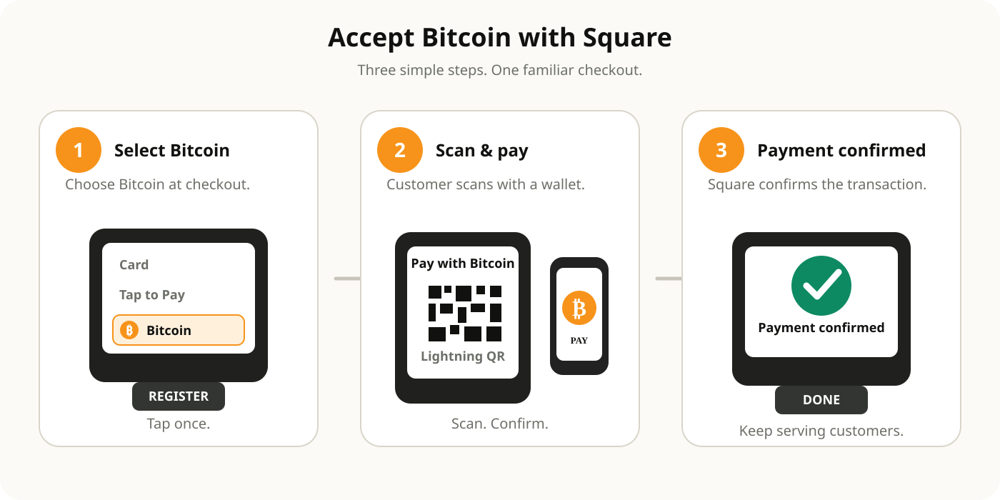

How Square Bitcoin payments work
A merchant-focused explanation of Square Bitcoin checkout, Lightning payments, settlement and reporting.

1. The merchant selects Bitcoin
On supported Square point-of-sale flows, the seller can choose Bitcoin as the payment method. Square generates the payment experience for the customer.
2. The customer pays over Lightning
The standard flow presents a Lightning QR code. On Square Register (2nd generation), customers can also initiate Bitcoin on the customer-facing display and use a Lightning-enabled wallet with NFC.
3. Square confirms the payment
Once confirmed, the seller and customer see the transaction complete and a receipt can be issued. Lightning payments are designed to settle quickly, though technical delays are possible.
4. The merchant receives dollars or Bitcoin
Eligible merchants can configure settlement so the payment is received as U.S. dollars or Bitcoin.
5. The transaction appears in Square reporting
Bitcoin activity can be reviewed inside Square for bookkeeping and reconciliation.